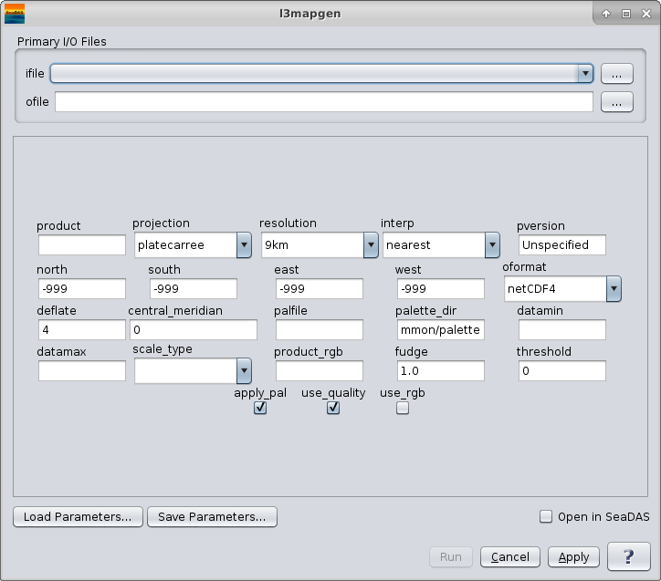

| l3mapgen | |
Creates a Level 3 mapped image.
Takes a product (or products if netCDF output) from an L3 bin file, reprojects the data using Proj.4 and writes a mapped file in the requested output format.
OCSSW -> l3mapgen
|  |
| UI Element Name | Type | Description | Required/Optional | Default Value |
| ifile | ifile | Input Level 3 bin file name. | Required | |
| ofile | ofile | Output filename for generated level 3 image file. | Required | |
| product | string | product(s) to map | Required | |
| projection | string | One of the following predefined (proj4) projections may be selected:
smi: Standard Mapped image, cylindrical projection,
uses central_meridian. NSEW defaults to whole globe.
projection="+proj=eqc +lon_0= "
platecarree: Plate Carree image, cylindrical projection,
uses central_meridian.
projection="+proj=eqc +lon_0= "
mollweide: Mollweide projection
projection="+proj=moll +lon_0= "
lambert: Lambert conformal conic projection
projection="+proj=lcc +lon_0= "
albersconic: Albers Equal Area Conic projection
projection="+proj=aea +lon_0= "
mercator: Mercator cylindrical map projection
projection="+proj=merc +lon_0= "
ease2: EASE-Grid 2.0 projection
projection="+proj=cea +lat_0=0 +lat_ts=30
+ellps=WGS84 +datum=WGS84 +units=m
+lon_0= "
raw: Raw dump of bin file contents. albersconic: "+proj=aea +lon_0={central_meridian}"
|
Optional | platecarree |
| resolution | string | size of the output pixel in meters or SMI dimensions:
90km: 432 x 216 image for full globe
36km: 1080 x 540
18km: 2160 x 1080
9km: 4320 x 2160
4km: 8640 x 4320
2km: 17280 x 8640
1km: 34560 x 17280
hkm: 69120 x 34560
qkm: 138240 x 69120
smi: 4096 x 2048
smi4: 8192 x 4096
land: 8640 x 4320
#.#: width of a pixel in meters
#.#km: width of a pixel in kilometers
#.#deg: width of a pixel in degrees
|
Optional | 9km |
| interp | string | interpolation method:
nearest: Nearest Neighbor
bin: bin all of the pixels that intersect the
area of the output pixel
area: bin weighted by area all of the pixels that
intersect the area of the output pixel
|
Optional | nearest |
| pversion | string | Processing version string | Optional | Unspecified |
| north | float | Northern most Latitude | Optional | -999 |
| south | float | Southern most Latitude | Optional | -999 |
| east | float | Eastern most Longitude | Optional | -999 |
| west | float | Western most Longitude | Optional | -999 |
| oformat | string | format of the output file :
netCDF: netCDF file, can contain more than one product
hdf4: HDF4 file (old SMI format)
png: PNG image file
ppm: PPM image file
geoTIFF: TIFF file with georeference tags
|
Optional | netCDF4 |
| deflate | int | deflation level | Optional | 4 |
| central_meridian | float | central meridian for projection in deg east. Only used for convenience projections and assumes whole earthe from east to west. |
Optional | 0 |
| palfile | ifile | palette file name | Optional | the palette is chosen using the product.xml file |
| palette_dir | ifile | palette directory | Optional | $OCDATAROOT/common/palette |
| datamin | float | minimum value for data scaling | Optional | default from product.xml |
| datamax | float | maximum value for data scaling | Optional | default from product.xml |
| scale_type | string | data scaling type:
linear: linear scaling
log: logarithmic scaling
arctan: arc tangent scaling
|
Optional | default from product.xml |
| Product_rgb | string | Three products to use for RGB. Default is sensor-specific | Optional | rhos_670,rhos_555,rhos_412 |
| fudge | float | fudge factor used to modify size of L3 pixels | Optional | 1.0 |
| threshold | float | minimum percentage of filled pixels before an image is generated | Optional | 0 |
| apply_pal | boolean | apply color palette:
yes: color image
no: grayscale image
|
Optional | yes |
| use_quality | boolean | should we do quality factor processing | Optional | yes |
| use_rgb | boolean | should we use product_rgb to make a pseudo-true color image | Optional | no |
| UI Element Name | Type | Description |
| Browser Button | Button | Selects ifile/ofile |
| Load Parameters ... | Button | Reads in previously saved parameters and populates the fields in GUI. |
| Save Parameters ... | Button | Saves the current arguments in GUI in a file. |
| Run | Button | Executes the l2mapgen command with arguments provided in the UI. |
| Cancel | Button | Closes current processor GUI. |
| Apply | Button | Makes current arguments effective. |
| Open in SeaDAS | Checkbox | If selected, the ofile will be added to the open products list right after its generation. |
| ? | Button | Displays the help content of the current command. |
l3mapgen 2.1.0-seadas-v7.5.2.1 (Nov 17 2018 15:44:29)
Usage: l3mapgen argument-list
This program takes a product (or products if netCDF output) from an L3 bin
or SMI file, reprojects the data using proj.4 and writes a mapped file in
the requested output format.
Return values
0 = All Good
1 = Error
110 = No valid data to map
The argument list is a set of keyword=value pairs. Arguments can
be specified on the command line, or put into a parameter file, or the
two methods can be used together, with command line overriding.
The list of valid keywords follows:
help (boolean) (alias=h) (default=false) = print usage information
version (boolean) (default=false) = print the version
information
dump_options (boolean) (default=false) = print
information about each option
dump_options_paramfile (ofile) = print
information about each option to paramfile
dump_options_xmlfile (ofile) = print
information about each option to XML file
par (ifile) = input parameter file
suite (string) = suite for default parameters
ifile (ifile) = input L3 bin filename
ofile (ofile) (default=output) = output filename
oformat (string) (default=netcdf4) = output file format
netcdf4: netCDF4 file, can contain more than one product
hdf4: HDF4 file (old SMI format)
png: PNG image file
ppm: PPM image file
tiff: TIFF file with georeference tags
ofile2 (ofile) = second output filename
oformat2 (string) (default=png) = second output file format
same options as oformat
deflate (int) (default=4) = netCDF4 deflation level
product (string) = comma separated list of products.
Each product can have an optional colon and modifier appended.
For example, "product=chlor_a,chlor_a:stdev,Kd_490:nobs"
Available modifiers:
avg average value (default)
stdev standard deviation
var variance
nobs number of observations in the bin
nscenes number of contributing scenes
obs_time average observation time (TAI93)
bin_num bin ID number
resolution (string) (default=9km) = size of output pixel
in meters or SMI dimensions
90km: 432 x 216 image for full globe
36km: 1080 x 540
18km: 2160 x 1080
9km: 4320 x 2160
4km: 8640 x 4320
2km: 17280 x 8640
1km: 34560 x 17280
hkm: 69120 x 34560
qkm: 138240 x 69120
smi: 4096 x 2048
smi4: 8192 x 4096
land: 8640 x 4320
#.#: width of a pixel in meters
#.#km: width of a pixel in kilometers
#.#deg: width of a pixel in degrees
width (int) = width of output image in pixels; supercedes resolution parameter.
projection (string) (default=platecarree) = proj.4 projection string or one
of the following predefined projections:
smi: Standard Mapped image, cylindrical projection,
uses central_meridian. NSEW defaults to whole globe.
projection="+proj=eqc +lon_0="
platecarree: Plate Carree image, cylindrical projection,
uses central_meridian.
projection="+proj=eqc +lon_0="
mollweide: Mollweide projection
projection="+proj=moll +lon_0="
lambert: Lambert conformal conic projection
projection="+proj=lcc +lon_0="
albersconic: Albers Equal Area Conic projection
projection="+proj=aea +lon_0="
mercator: Mercator cylindrical map projection
projection="+proj=merc +lon_0="
obliquemerc: Oblique Mercator cylindrical map projection
projection="+proj=omerc +gamma=0 +lat_0=
+lonc= +alpha=
+k_0=1 +x_0=0 +y_0=0"
ease2: EASE-Grid 2.0 projection
projection="+proj=cea +lat_0=0 +lat_ts=30
+ellps=WGS84 +datum=WGS84 +units=m
+lon_0="
stere: Stereographic projection
projection="+proj=stere +lat_0= +lat_ts=
+lon_0=
+ellps=WGS84 +datum=WGS84 +units=m"
conus: USA Contiguous Albers Equal Area Conic USGS version
projection="+proj=aea +lat_1=29.5 +lat_2=45.5
+lat_0=23.0 +lon_0=-96 +x_0=0 +y_0=0
+ellps=GRS80 +datum=NAD83 +units=m"
raw: Raw dump of bin file contents.
projection_alt (string) = proj.4 projection string or one
of the predefined projections.
alt_thresh_lat (float) (default=999) = absolute value of latitude for switching projection
to the projection_alt.
central_meridian (float) (default=-999) = central meridian for projection in deg east.
Used only for raw dump and predefined projections as above.
lat_ts (float) = latitude of true scale for projection in deg north.
Used only for predefined projections above as required.
lat_0 (float) = latitude of origin for projection in deg north.
Used only for predefined projections above as required.
azimuth (float) = projection rotation angle in deg north.
Used only for predefined projections above as required.
north (float) (default=-999) = Northernmost Latitude (default: file north)
south (float) (default=-999) = Southernmost Latitude (default: file south)
east (float) (default=-999) = Easternmost Longitude (default: file east)
west (float) (default=-999) = Westernmost Longitude (default: file west)
trimNSEW (boolean) (default=yes) = should we trim output
to match input NSEW range
interp (string) (default=nearest) = interpolation method:
nearest: Nearest Neighbor
bin: bin all of the pixels that intersect the area of the
output pixel
area: bin weighted by area of all the pixels that intersect
the area of the output pixel
apply_pal (boolean) (default=yes) = apply color palette:
yes: color image
no: grayscale image
palfile (ifile) = palette filename (default from product.xml)
datamin (float) = minimum value for scaling (default from product.xml)
datamax (float) = maximum value for scaling (default from product.xml)
scale_type (string) = data scaling type (default from product.xml)
linear: linear scaling
log: logarithmic scaling
arctan: arc tangent scaling
quiet (boolean) (default=false) = stop the status printing
pversion (string) (default=Unspecified) = processing version string
use_quality (boolean) (default=yes) = should we do quality factor processing
quality_product (string) = product to use for quality factor processing
use_rgb (boolean) (default=no) = should we use product_rgb to make a
pseudo-true color image
product_rgb (string) (default=rhos_670,rhos_555,rhos_412) =
Three products to use for RGB. Default is sensor-specific.
fudge (float) (default=1.0) = fudge factor used to modify size of L3 pixels
threshold (float) (default=0) = minimum percentage of filled pixels before
an image is generated
num_cache (int) (default=500) = number of rows to cache in memory.
mask_land (boolean) (default=no) = set land pixels to pixel value 254
land (ifile) (default=$OCDATAROOT/common/landmask_GMT15ARC.nc) = land mask file
full_latlon (boolean) (default=yes) = write full latitude and longitude arrays (except for SMI)